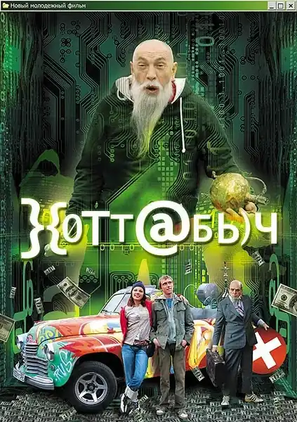

2006
Комедия, Приключения
Российская комедия о двадцатилетнем хакере Гере, который обнаруживает на старом сервере цифровую копию джинна Хоттабыча. Освободив «программиста из Тысячи и одной ночи», он получает доступ к магии, работающей подобно безлимитному, но плохо документированному API: желания исполняются буквально, с побочными эффектами и багами. Это легкий фильм о сказке про искусственный интеллект, написанной задолго до появления самого ИИ, — и о том, что даже джинну необходима качественная отладка.
A Russian comedy about Gera, a twenty-year-old hacker who discovers a digital copy of the genie Khottabych inside an old server. Having freed the 'programmer from the Thousand and One Nights', he gets magic that works like an unlimited but badly documented API: wishes come true literally, with side effects and bugs. A light film about an AI fairy tale written long before AI existed — and about the fact that even a genie needs proper debugging.